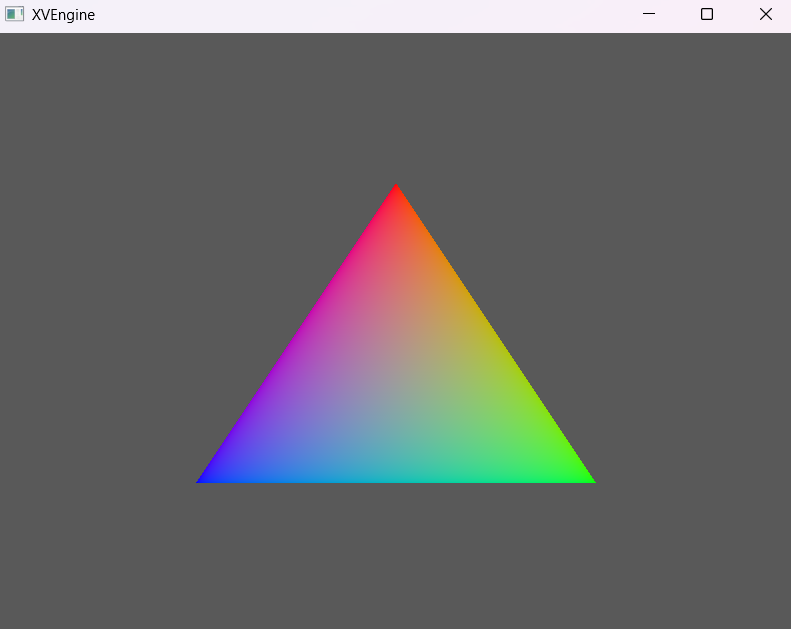
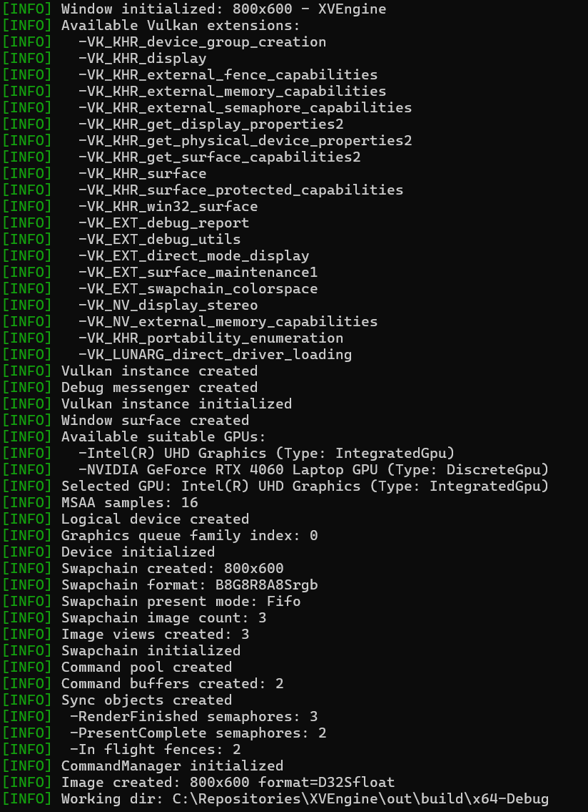

XVEngine

Overview
A real-time Vulkan 1.4 engine built from scratch in C++20, featuring dynamic rendering, modern synchronization, and RAII based across a fully custom rendering pipeline. An ongoing project covering everything from physical device selection and swapchain management to shader compilation and per-frame GPU synchronization. Built to better understand how modern graphics APIs actually work.
Currently in early stages, with a triangle rendered on screen and basic resource management implemented. Future plans include implementing a deferred renderer, physically based rendering, and a custom scene graph.
Gallery

Links